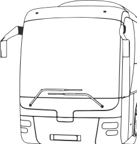

Более 20 лет ЦОДД делает дорги Москвыбезопасными и удобными
Сегодня здесь находится одна из самых современных в мире систем управления дорожным движением с крупными инфраструктурными и ИТ‑проектами
Для эффективного выполнения задач в ЦОДД создан уникальный транспортный парк: от брутальных пикапов до электровелосипедов, от мобильного центра управления городом до речного катера
Сегодня здесь находится одна из самых современных в мире систем управления дорожным движением с крупными инфраструктурными и ИТ‑проектами
Для эффективного выполнения задач в ЦОДД создан уникальный транспортный парк: от брутальных пикапов до электровелосипедов, от мобильного центра управления городом до речного катера
дорожный патруль ЦОДД
Ежедневно 30 экипажей Дорожного патруля ЦОДД курсируют по Москве.
Задача — регулировать движение на сложных участках, помогать водителям при поломке или аварии
В гараже Дорожного патруля 57 автомобилей: пикап, грузовой фургон, легковая машина. Все автомобили ярко‑зеленого цвета с проблесковыми маячками на крыше и логотипом ЦОДД
Дорожный патруль нельзя вызвать. Задания экипажи получают от дежурных Ситуационного центра ЦОДД


Ежедневно 30 экипажей Дорожного патруля ЦОДД курсируют по Москве. Задача — регулировать движение на сложных участках, помогать водителям при поломке или аварии
В гараже Дорожного патруля 57 автомобилей: пикап, грузовой фургон, легковая машина. Все автомобили ярко‑зеленого цвета с проблесковыми маячками на крыше и логотипом ЦОДД
мобильный ситуационный центр
Ситуационный центр ЦОДД — «мозг и сердце» Интеллектуальной транспортной системы Москвы
Отсюда 24/7 следят за движением на дорогах, управляют светофорами, координируют работу Дорожного патруля, собирают данные о трафике и заторах, выводят информацию на электронные табло, координируют разные службы при крупных ДТП и ЧП
Когда в городе проходят крупные мероприятия, и нужна максимальная оперативность, на месте работает мобильный Ситуационный центр. Полный аналог стационарного — только на колесах

Мобильный Ситцентр построен на базе автобуса MAN. В его салоне размещены рабочие места для специалистов, зал совещаний, системы связи и проч. Он полностью автономен и может работать как во время стоянки, так и в движении
Мобильный Ситцентр построен на базе автобуса MAN. В его салоне размещены рабочие места для специалистов, зал совещаний, системы связи и проч. Он полностью автономен и может работать как во время стоянки, так и в движении
Когда в городе проходят крупные мероприятия, и нужна максимальная оперативность, на месте работает мобильный Ситуационный центр. Полный аналог стационарного — только на колесах
Когда в городе проходят крупные мероприятия, и нужна максимальная оперативность, на месте работает мобильный Ситуационный центр. Полный аналог стационарного — только на колесах
Мобильный Ситцентр построен на базе автобуса MAN. В его салоне размещены рабочие места для специалистов, зал совещаний, системы связи и проч. Он полностью автономен
водный патруль

Водный патруль ЦОДД начал свою работу весной 2022 года
Зеленый катер ежедневно патрулирует акваторию города
В его задачи входит фиксация нарушений движения и стоянки в акватории, оперативное взаимодействие с контрольно-надзорными и правоохранительными органами, проведение профилактических бесед о правилах поведения на воде
У каждого члена экипажа есть жилет, а на катере — все необходимое для связи между судоводителями и Речным ситуационном центром ЦОДД, а также для навигации. Еще на катере есть спасательный круг, аптечка, багор и линь
За прошлый летний сезон Водный патруль прошел 18 тысяч километров. Совместно с Речным ситуационном центром выявлено свыше 100 нарушений
У каждого члена экипажа есть жилет, а на катере — все необходимое для связи между судоводителями и Речным ситуационном центром ЦОДД, а также для навигации. Еще на катере есть спасательный круг, аптечка, багор и линь
За прошлый летний сезон Водный патруль прошел 18 тысяч километров. Совместно с Речным ситуационном центром выявлено свыше 100 нарушений
велопатруль
Когда наступает теплый сезон, в Москве начинает работать велопатруль
Велопатруль оборудован всем необходимым для оперативной помощи на дороге: аптечкой и водой, ремонтным комплектом для велосипеда, огнетушителем, бланками европротокола. Сотрудники знают, как помочь в экстренной ситуации и оказать доврачебную помощь
Патруль следит за дорожной инфраструктурой: состоянием знаков, светофоров, навигационных стел, велопарковок и проч. Кроме того, в обязанности велопатруля входит освобождать велополосы, тротуары и пешеходные переходы от припаркованных автомобилей
Велопатруль оборудован всем необходимым для оперативной помощи на дороге: аптечкой и водой, ремонтным комплектом для велосипеда, огнетушителем, бланками европротокола. Сотрудники знают, как помочь в экстренной ситуации и оказать доврачебную помощь
Патруль следит за дорожной инфраструктурой: состоянием знаков, светофоров, навигационных стел, велопарковок и проч. Кроме того, в обязанности велопатруля входит освобождать велополосы, тротуары и пешеходные переходы от припаркованных автомобилей

служба помощи
Создана на базе мобильных комплексов фотовидеофиксации
110 автомобилей патрулируют город 24/7 и приезжаютк водителям, которые попалив ДТП или столкнулисьсо сложностями на дороге
На машинах установлены камеры, которые автоматически следят за соблюдением ПДД, а также распознают транспорт, который находится в розыске
Мониторит состояние дорожной инфраструктуры. Следит за знаками, светофорами и прочими объектами
С 2023 года автопарк Службы помощи пополнился электрическими кроссоверами Москвич 3е
Мониторит состояние дорожной инфраструктуры. Следит за знаками, светофорами и прочими объектами
С 2023 года автопарк Службы помощи пополнился электрическими кроссоверами Москвич 3е